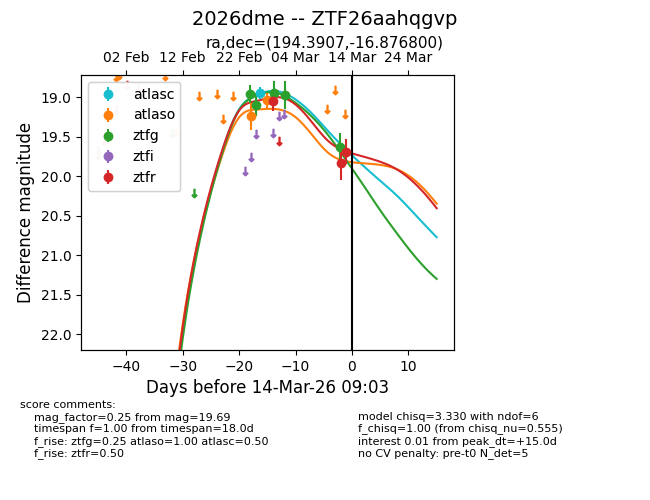
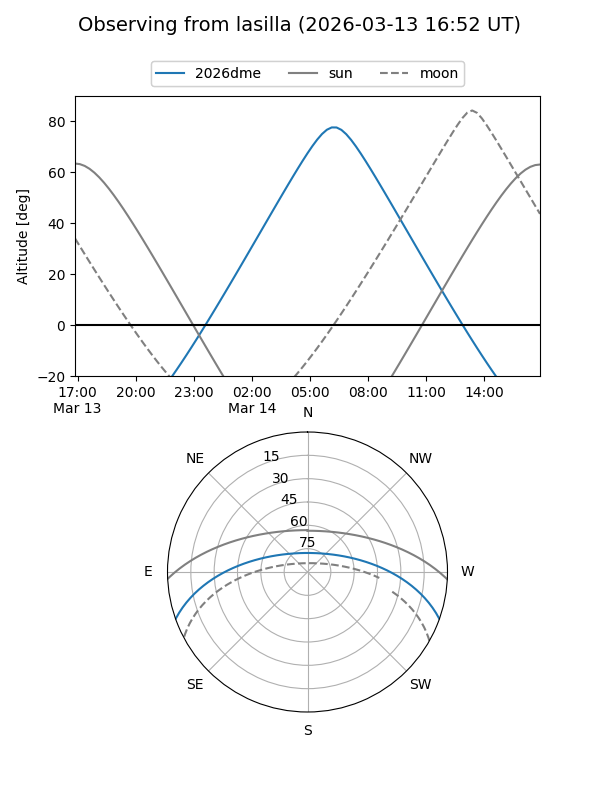
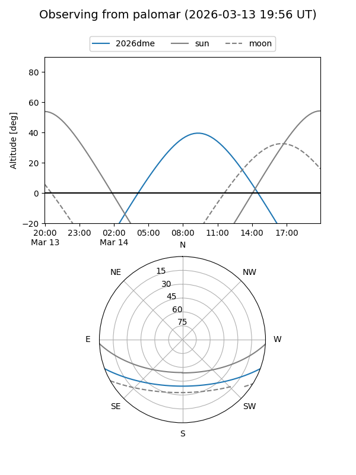
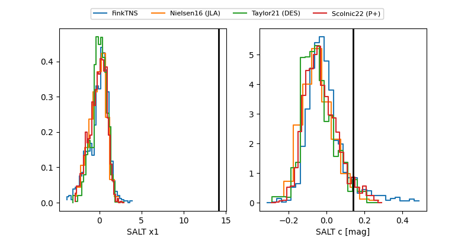

2026dme
Target 2026dme at 2026-03-14 09:05
Aliases and brokers:
FINK: link
Lasair: link
ALeRCE: link
TNS: link
YSE: link
alt names
ZTF26aahqgvp (ztf,fink_ztf)
2026dme (tns,yse)
Coordinates:
equatorial (ra, dec) = 194.3907,-16.87680
equatorial (HMS+DMS) = 12:57:33.78,-16:52:36.48
galactic (l, b) = (305.0404,+45.96987)
Flags:
Photometry:
last atlasc=18.95, atlaso=19.04, ztfg=19.64, ztfr=19.69
1 atlasc, 2 atlaso, 5 ztfg, 3 ztfr detections
Lightcurve

Visibility


Additional plots
